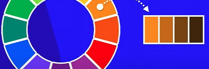

Anotações Curso em Video HTML5 M2
Geral
- Abrir ou criar pagina se não existe: ctrl + Click sobre o link
04 Armonização de cores
- Circulo Cromatico:
- Cores Primarias
- Cores Secundarias:
- Cores Terciarias
- Composição da cor primaria com secundarias
- Temperatura das Cores
- Cores Complementares
- Cores com algo contraste é a cor oposta no circulo cromatico
- Cores Analogas
- Cores vizinhas no circulo cromatico tem baixo contraste
- Cores Analogas e Complementares
- Cores Analogas Relacionadas
- Cores Triadicas
- Cores em Quadrado
- Seleciona uma cor e pula 2
- Cores Tetradicas
- Seleciona uma cor e a complementar dela e faz o mesmo para o outro par
- Monocromia
- Consiste em pegar apenas uma cor e alterar a saturação e o brilho/luminosidade

05 Paleta de cores
Ferramentas para construir uma paleta de cores
- Adobe color
- Disco de Cores:Montar paleta de cores
- Imagen: Extrai paleta de cores da imagem
- Explorar: Diveras paletas de cores prontas
- Paletton
Bem similar ao adobe colors
- Coolors Skilshare
- Gera paleta de cores e permite fixar cada cor
06 Capturando cores
Plugin Colorzilla
07 Criando Degrade em CSS
08 Criando Exemplo com CSS COR03
09 Primeiros passos tipografia
10 - 11 Anatomia do Tipo
- Tipo é cada uma das letras (Times é a padrão da maioria dos navegadores)
- Tamanhos Metricos
- Tamanhos Anatomicos
- Serifa: serve para facilitar a leitura
- Componentes Anatomicos Geométricos
- Glifo = Letra
- Categorias de Fontes
- safeCombination de fontes
12 13 Tamanho de Fonte
15 16 Detectando fontes
Detectando fonte em imagens
18 Alinhamento de Fontes
19 20 22 Usando id e CSS e diferença id e class Pseudoelementos
- id: recomendação W3C um por html
- class: mais de um objeto com a mesma configuração
- id sobreproe a class
- pseudo classes
- # = id
- . = class
- : = pseudoclass
- :: = pseudo-elemento
- > = children
23 Modelo de Caixas
- Anatomia da Caixa
- Tipo da Caixa
- Exemplos box level
Planejamento do site
36 Incorporando videos externos EX11
- Youtube para hospedar videos publicos
- Vimeo para hospedagem privada
40 Estilos Externos EX15